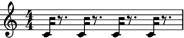
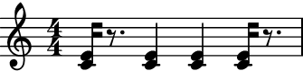
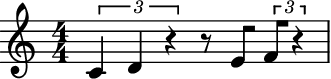
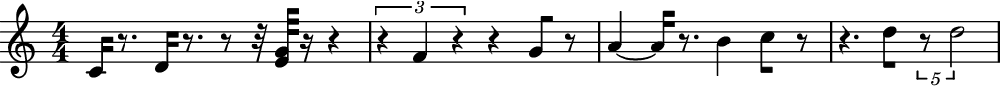
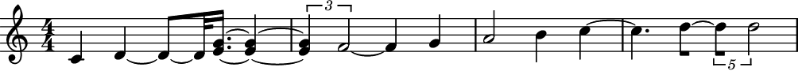
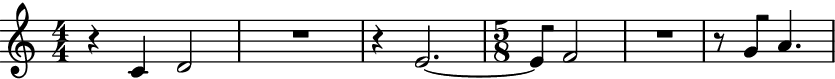
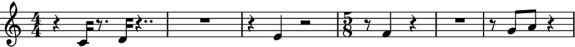
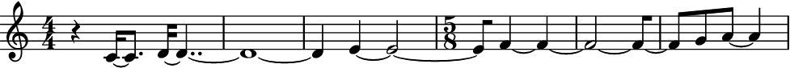

sustain_notes
- auxjad.mutate.sustain_notes(container: Container, *, sustain_multimeasure_rests: bool = True, rewrite_meter: bool = True) None[source]
Mutates an input container (of type
abjad.Containeror child class) in place and has no return value; this function will sustain all pitched leaves until the next pitched leaf, thus replacing all rests in between them.- Basic usage:
Simply call the function on a container.
>>> staff = abjad.Staff(r"c'16 r8. d'16 r8. e'16 r8. f'16 r8.") >>> abjad.show(staff)

>>> auxjad.mutate.sustain_notes(staff) >>> abjad.show(staff)

Note
Auxjad automatically adds this function as an extension function to
abjad.mutate. It can thus be used from eitherauxjad.mutateorabjad.mutatenamespaces. Therefore, the two lines below are equivalent:>>> auxjad.mutate.close_containers(staff) >>> abjad.mutate.close_containers(staff)
- Leaves with same pitch:
Leaves are sustained until the next pitched leaf, even if the pitch is the same.
>>> staff = abjad.Staff(r"c'16 r8. c'16 r8. c'16 r8. c'16 r8.") >>> abjad.show(staff)
 >>> auxjad.mutate.sustain_notes(staff) >>> abjad.show(staff)

- Consecutive leaves with the same pitch:
Consecutive pitched leaves with a same pitch will not be tied.
>>> staff = abjad.Staff( ... r"<c' e'>16 r8. <c' e'>4 <c' e'>4 <c' e'>16 r8." ... ) >>> abjad.show(staff)
 >>> auxjad.mutate.sustain_notes(staff) >>> abjad.show(staff)

- Tuplets:
This function handles tuplets.
>>> staff = abjad.Staff( ... r"\times 2/3 {c'4 d'4 r4} r8 e'8 \times 2/3 {f'8 r4}" ... ) >>> abjad.show(staff)
 >>> auxjad.mutate.sustain_notes(staff) >>> abjad.show(staff)

- Complex example:
This function can handle containers with a mixture of notes, chords, and rests, as well as tuplets.
>>> staff = abjad.Staff( ... r"c'16 r8. d'16 r8. r8 r32 <e' g'>32 r16 r4 " ... r"\times 2/3 {r4 f'4 r4} r4 g'8 r8 a'4 ~ " ... r"a'16 r8. b'4 c''8 r8 " ... r"r4. d''8 \times 4/5 {r8 d''2}" ... ) >>> abjad.show(staff)
 >>> auxjad.mutate.sustain_notes(staff) >>> abjad.show(staff)
 sustain_multimeasure_rests:By default, notes are tied across multi-measure rests.
>>> staff = abjad.Staff( ... r"r4 c'16 r8. d'16 r4.. " ... r"R1 " ... r"r4 e'4 r2 " ... r"\time 5/8 r8 f'4 r4 " ... r"R1 * 5/8 " ... r"r8 g'8 a'8 r4" ... ) >>> abjad.show(staff)

>>> auxjad.mutate.sustain_notes(staff) >>> abjad.show(staff)

To disable sustaining across those, set
sustain_multimeasure_reststoFalse:>>> auxjad.mutate.sustain_notes(staff, sustain_multimeasure_rests=True) >>> abjad.show(staff)
 rewrite_meter:By default,
auxjad.mutate.auto_rewrite_meter()is summoned after notes are sustained.>>> staff = abjad.Staff( ... r"r4 c'16 r8. d'16 r4.. " ... r"R1" ... r"r4 e'4 r2" ... r"\time 5/8 r8 f'4 r4" ... r"R1 * 5/8 " ... r"r8 g'8 a'8 r4" ... ) >>> abjad.show(staff)
 To disable this behaviour, set
rewrite_metertoFalse:>>> auxjad.mutate.sustain_notes(staff, rewrite_meter=False) >>> abjad.show(staff)

Warning
The input container must be a contiguous logical voice. When dealing with a container with multiple subcontainers (e.g. a score containing multiple staves), the best approach is to cycle through these subcontainers, applying this function to them individually.